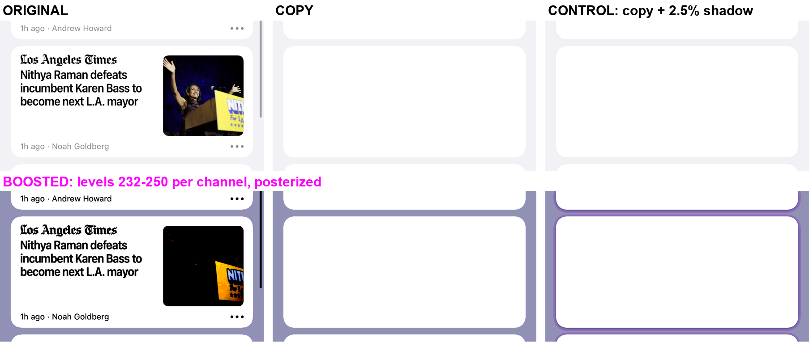
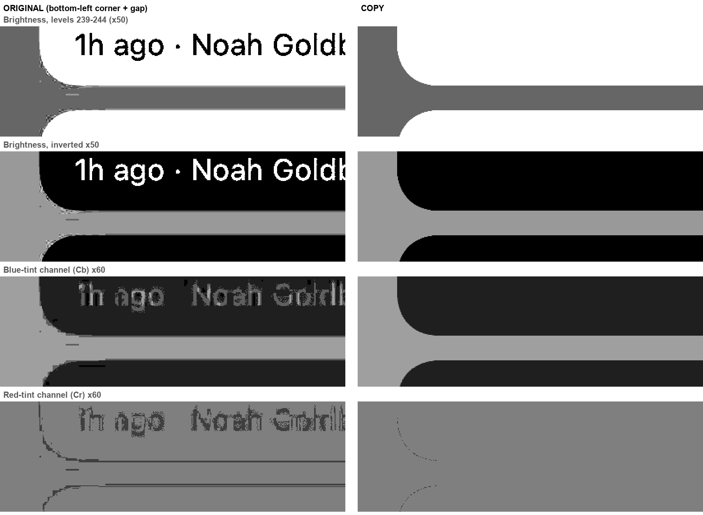
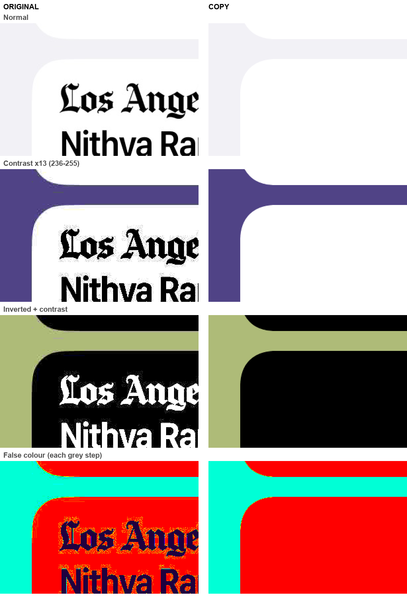

Original (Apple News)
Copy (CSS)
| Card | #FFFFFF, flat — 255,255,255 edge to edge |
| Page grey | #F2F1F6 — 242,241,246 everywhere in the gaps |
| Shadow | None — gap under the card is flat 241.0 brightness, row 1 to row 28, all 1000 columns |
| Outline / highlight | None — the 2px tint line on every edge is JPEG colour blur: same brightness as the grey, and identical above and below each card |
| Corner | 16pt, Apple continuous corner (copy: 18px superellipse(1.2), 16px round where unsupported) |
| Spacing | 16pt side margin · 10pt between cards · card 361 × 166pt |


